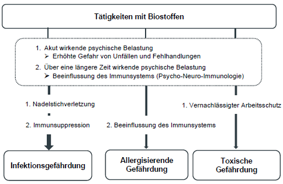

6. Psychische Belastungen bei Tätigkeiten mit Biostoffen
6.1 Auswirkungen psychischer Belastungen
Psychische Belastungen können bei den Beschäftigten zu Beeinträchtigungen mit akuten oder langfristigen Folgen führen, die bei bestimmten Tätigkeiten mit Biostoffen die Gefahr von Infektionen oder allergischen oder toxischen Reaktionen erhöhen können.
(1) Akute Folgen können ein nicht sicherheitsgerechtes Verhalten und eine steigende Unfallgefahr sein. Ursachen dafür sind insbesondere
- nachlassende Aufmerksamkeit, Konzentration,
- Informationsverluste durch leichte Ablenkbarkeit von der Arbeit,
- verlängerte Reaktionszeiten,
- verspätetes oder ausbleibendes Bewusstwerden eigener Fehlhandlungen,
- Tendenz zur reaktiven statt vorausschauenden Arbeitsweise,
- Angst.
(2) Längerfristige Folgen können eine veränderte Immunlage sein, mit der Folge, dass
- virale und bakterielle Prozesse aktiviert werden können,
- eine verzögerte Wundheilung besteht und damit Eintrittspforten für Infektionserreger bestehen können,
- die Empfindlichkeit gegenüber Allergenen steigt,
- die Ausprägung von Symptomen bei Autoimmunerkrankungen verstärkt werden können,
- die Immunantwort unterdrückt wird,
- bei Impfungen eine geringere Antikörperbildung erfolgt und damit ein Impferfolg ausbleiben kann.
Aufgrund immunologischer Vorgänge können Erkrankungen auch noch zeitversetzt nach der Exposition, z.B. im Urlaub, auftreten.

Abbildung 3: Gefährdungen durch Biostoffe unter dem Einfluss psychischer Belastungen Akute psychische Belastungen können Beanspruchungen wie z.B. Ermüdung, herabgesetzte Wachsamkeit und psychische Sättigung hervorrufen. Folgen können Unfälle wie Nadelstichverletzungen oder vernachlässigter Arbeitsschutz wie Weglassen von Atemschutz sein. Die Infektionsgefährdung und toxische Gefährdung ist erhöht.
Über längere Zeit bestehende psychische Belastungen können zu einer veränderten Immunlage führen. Eine darauf folgende Immunsuppression erhöht die Infektionsgefährdung.
Außerdem kann durch die Beeinflussung des Immunsystems die Empfindlichkeit gegenüber Allergenen gesteigert sein, sowie die Ausprägung allergischer Symptome verstärkt werden.
6.2 Ermittlung psychischer Belastungsfaktoren
Die für die Gefährdungsbeurteilung von nach BioStoffV relevanten psychischen Belastungsfaktoren können im Zusammenhang mit der Arbeitsorganisation, der Arbeitsumgebung einschließlich Arbeitsmittel, der Arbeitsaufgabe und den beruflichen sozialen Beziehungen auftreten.
Für die Ermittlung der psychischen Belastungsfaktoren sind Beobachtungsinterviews, Mitarbeiterbefragungen sowie moderierte Analyseworkshops möglich. Zusätzlich können Beinahe-Unfälle, Krankenstandsanalysen, Analysen der Unfallversicherungsträger sowie Erkenntnisse der Arbeitsmedizinischen Vorsorge hinzugezogen werden (siehe Anlage 6).